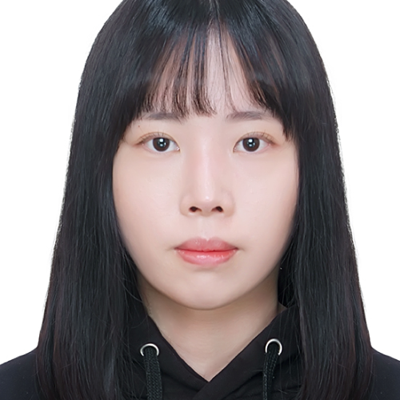

내 컴퓨터

강경민
Frontend Developer kkm15928@naver.com안녕하세요, 저는 프론트엔드를 배우고 있는 강경민입니다. 현재는 HTML, CSS, JavaScript를 중점적으로 학습하고 있습니다. 웹 개발에 대한 열정과 호기심을 가지고 있어서 새로운 기술을 배우는 것을 즐기고 있습니다. 프론트엔드 개발을 통해 사용자 경험을 개선하는 것에 관심이 많습니다. React와 같은 프레임워크도 차근차근 배워가고 있습니다.
현재는 HTML, CSS, JavaScript의 기본 개념을 학습하고 있으며, 이를 활용하여 간단한 웹 페이지를 만들어보고 있습니다. 프론트엔드 프레임워크인
React에도 관심을 가지고 있어서 차근차근 학습 중에 있습니다. 새로운 기술이나 도구를 배우는 것을 즐기며, 점차적으로 실력을 향상시키고자 노력하고
있습니다.